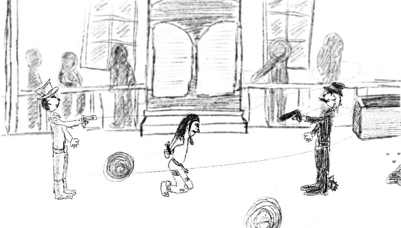

Creacover 2019 : J25
La musique du jour est Anthem For No State, Pt. I,II,III de Godspeed You ! Black Emperor.
Je connaissais ce groupe, mais pas cette musique. Pas de surprise, elle est extra. Je ressens un aspect far west qui implique une sorte d’avancée spirituelle. Il y a de la lumière et de l’espoir au départ. Ça change progressivement en noirceur et vilainie.
Je voulais représenter ça en incitant à lire le dessin de gauche à droite. On voit d’abord le cowboy en blanc qui pointe son pistolet, apparemment vers l’indien. En fin de compte, on voit le cowboy en noir et on se dit que le premier cherche sans doute à empêcher le dernier de tuer l’indien. Il y a un bon et un mauvais côté.
Je n’ai pas eu beaucoup de temps et je ne me suis pas beaucoup appliquée. Ce n’est qu’un croquis finalement et la lecture linéaire n’est peut-être pas très parlante.
